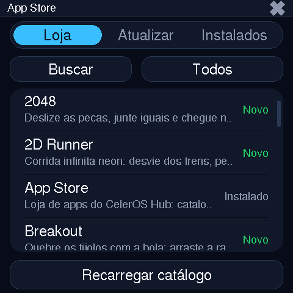
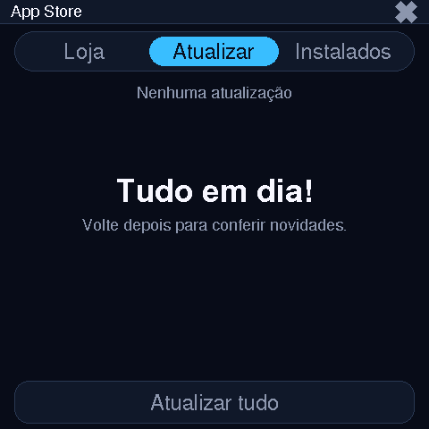

A App Store no aparelho #




As três abas — Loja, Atualizar e Instalados — vivem no
mesmo app; a aba Atualizar compara versão e MD5 do main.js instalado
com o do catálogo e só mexe no que mudou.
Como uma instalação acontece #
<pkg>/main.js.new, confere o MD5 e só então renomeia.- Destino:
/local/apps/<pkg>no flash, ou/sd/appsquando o flag/local/config_install_sd.txtexiste (placas com cartão). - Multi-arquivo: pacotes com
filesno catálogo baixam cada extra com MD5 próprio; o rename em lote só roda com 100% dos downloads ok. - Self-update: a própria
celeros.appstoreestá no catálogo (entradasystem: true) — a loja atualiza a si mesma como qualquer app. - API: o card mostra o requisito e o hub já barra no publish o que o
firmware da placa não rodaria (ex.:
main.js> 30 KB exigeapi ≥ 6).
E quando você toca instalar, é isto rodando no aparelho (do
main.js da App Store):
okDL = Net.download(fe.url, ftmp, function (got, total) {
bar(got, total); // progresso sem piscar
});
if (okDL && md5File(ftmp) === fe.md5) renameOK.push(ftmp, fe.dest);
// ...no fim: 100% ok → renomeia em lote; qualquer falha → limpa .newO contrato, campo a campo #
Três níveis, todos JSON plano. As URLs são absolutas (montadas com o
BASE_URL do servidor) — o cliente não conhece domínio chumbado.
1 · índice — GET /store/index.json
{
"name": "CelerOS App Store",
"base": "https://os.celer.tec.br",
"updated": "2026-10-05T21:26:02Z",
"categories": {
"Todos": "https://os.celer.tec.br/store/all.json",
"Arcade": "https://os.celer.tec.br/store/arcade.json",
"Utility": "https://os.celer.tec.br/store/utility.json",
"System": "…", "Demos": "…", "Benchmark": "…", "Simulation": "…"
}
}2 · categoria — GET /store/arcade.json (ou all.json)
apps"celeros.2048": {
"meta": "https://os.celer.tec.br/store/apps/celeros.2048/app.json",
"app": "https://os.celer.tec.br/store/apps/celeros.2048/main.js",
"api": 3,
"name": "2048", "version": "1.1.0", "author": "KryonOS",
"description": "Deslize as pecas, junte iguais e chegue no 2048…",
"category": "Arcade",
"changelog": "1.1.0 - botao Desfazer…",
"icon": "https://os.celer.tec.br/store/apps/celeros.2048/icon.png",
"size": 8304, "md5": "5a76e324f250bf3003dfef80edd5b05a",
"published_at": "2026-09-28T04:49:20Z",
"files": { "util.js": { "size": 1234, "md5": "…" } } // só em pacotes multi-arquivo
}Campos mínimos que o cliente usa: meta, app,
api. O resto alimenta o portal e as badges do card (PSRAM, tamanho,
downloads).
3 · manifesto do pacote — app.json em cada pasta
| Campo | Regra | Quem escreve |
|---|---|---|
packageName | ^[a-z0-9]+(\.[a-z0-9]+)+$ — ex.: celeros.2048 | autor |
name author description | obrigatórios, texto livre | autor |
version | semver x.y.z; publish exige > que a atual | autor |
api | int, nível mínimo de firmware (default 1) | autor |
category | default Apps — vira categoria da loja | autor |
requires | ⊂ ["psram"] — libera main.js até 128 KB | autor |
permissions | fs net gpio system — consentimento no device | autor |
changelog | texto; o card "novidades" mostra | autor |
size md5 published_at publisher files | recomputados no publish | hub — nunca setar à mão |
O celerctl apps install de pasta local recusa
app.json com campos gerenciados (publisher,
published_at…) — a cópia do hub não serve de pasta de install
direto; use o publish do hub ou limpe os
campos.
As rotas do catálogo #
| Rota | Retorna | |
|---|---|---|
/store/index.json | GET | índice de categorias (+ "Todos") |
/store/all.json | GET | união de todas as categorias — 1 request |
/store/<slug>.json | GET | apps de uma categoria (404 se inexistente) |
/store/apps/<pkg>/main.js | GET | o app — conta um download no /api/info |
/store/apps/<pkg>/… | GET | app.json, icon.png e extras (estático) |